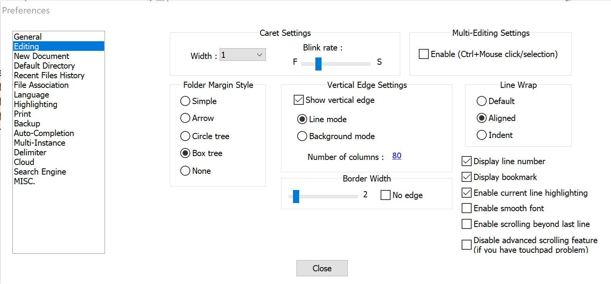
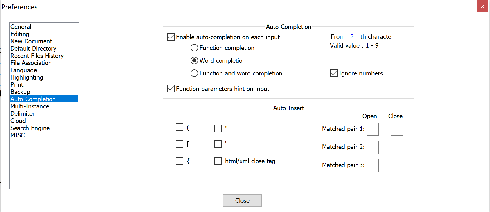
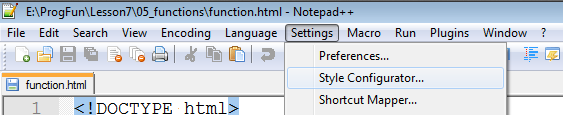
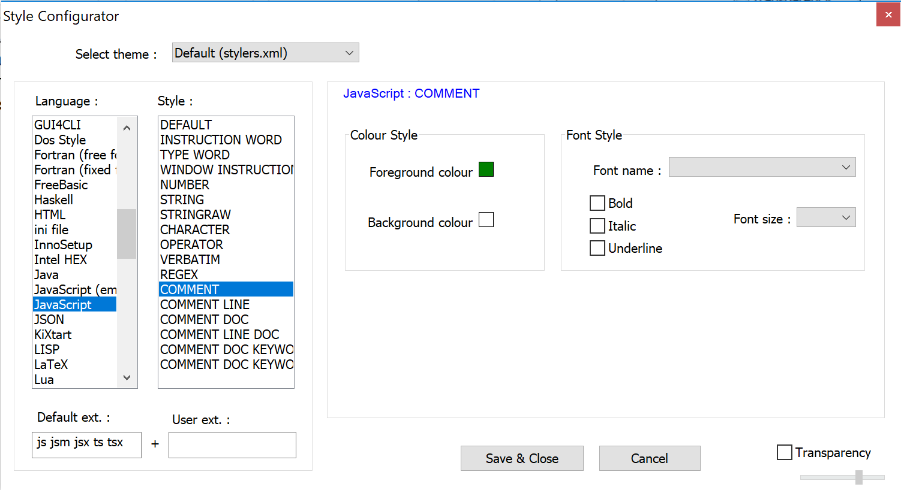
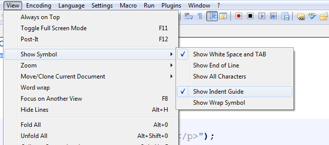

Required Notepad++ Settings
File: /unit1/notepadSettings.html
Here are the required Notepad++ settings for the course. Sometimes the settings are somehow lost and need to be reset. You'll learn how to set those, too.
If these settings are not correct you can lose points in your projects!
Settings Menu
- Select the Settings-->Preferences menu item:

- In the dialog box that opens, click on the "Editing":

- In this dialog box make sure that the following are set:
- Vertical Edge Setting-->Show vertical edge
checked - Vertical Edge Setting-->Line mode
checked - Vertical Edge Setting-->Number of columns: 80
- Vertical Edge Setting-->Show vertical edge
- In the same dialog box, click on the "Language Menu/Tab Settings":

- In this dialog box make sure the following options are set:
- Tab Setting-->Tab size: 2
- Tab Setting-->Replace by Space
checked
- In the same dialog box, click on the "Backup/Auto-completion":
 - In this dialog box make sure the following are set:
- Auto-completion-->Enable Auto-completion on each input
checked - Auto-completion-->Enable Auto-completion-->Word completion
checked - Auto-completion-->From 2 th characters set to
2
- Auto-completion-->Enable Auto-completion on each input
- Select the Settings-->Styler Configurator menu item:
 - In this dialog box:
- Select "JavaScript" in the left selection box labelled "Language:"
- For ALL the "Style:" settings that have the word COMMENT in them, make sure that the "Font style" and "Font size" are blank. This is the top item in the selection list.
- Select the View menu and make sure the menu item "Show White Space and TAB" is checked:

With that, your environment is all configured and you're ready to work on the rest of the labs for this course.